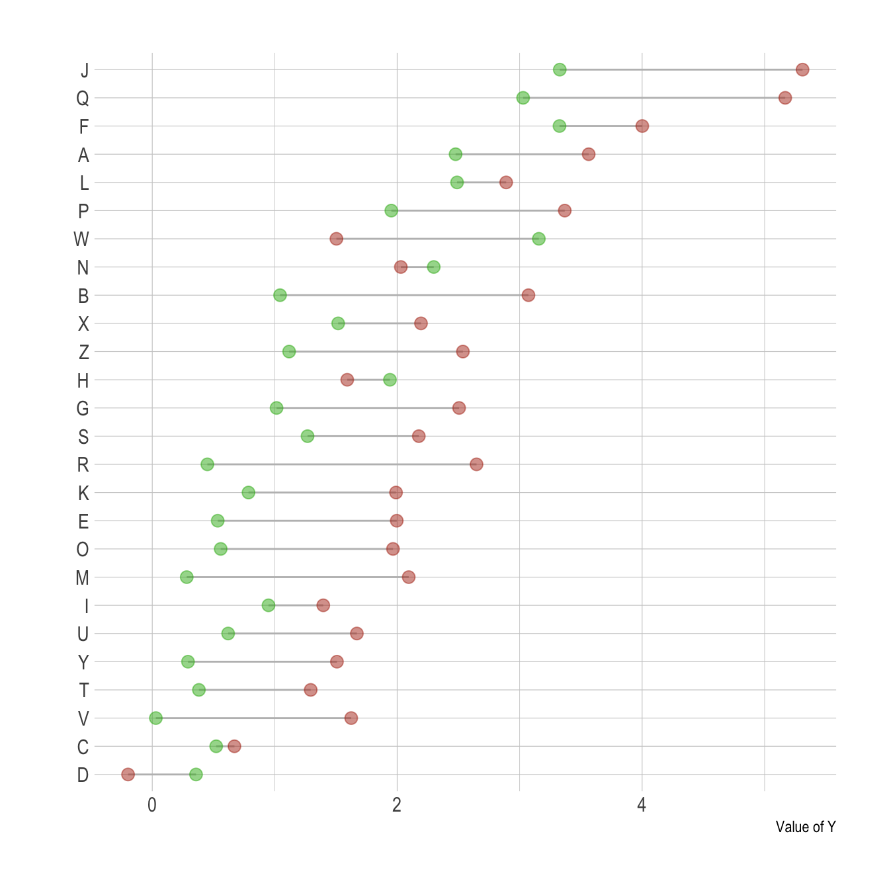

Related chart types

Barplot

Spider / Radar

Wordcloud

Parallel

Lollipop

Circular Barplot
A lollipop chart can be used to compare 2 categories, linking them with a segment to stress out their difference. This post explains how to do it with R and ggplot2.
Lollipop plots can be very appropriate when it comes to compare 2 values for several entities.
For each entity, one point is drawn for each variable, with a different color. Their difference is then highlighted using a segment. This type of visualisation is also called Cleveland dot plots.
As usual, it is advised to order your individuals by mean, median, or group difference to give even more insight to the figure.

# Library
library(ggplot2)
library(dplyr)
library(hrbrthemes)
# Create data
value1 <- abs(rnorm(26))*2
data <- data.frame(
x=LETTERS[1:26],
value1=value1,
value2=value1+1+rnorm(26, sd=1)
)
# Reorder data using average? Learn more about reordering in chart #267
data <- data %>%
rowwise() %>%
mutate( mymean = mean(c(value1,value2) )) %>%
arrange(mymean) %>%
mutate(x=factor(x, x))
# Plot
ggplot(data) +
geom_segment( aes(x=x, xend=x, y=value1, yend=value2), color="grey") +
geom_point( aes(x=x, y=value1), color=rgb(0.2,0.7,0.1,0.5), size=3 ) +
geom_point( aes(x=x, y=value2), color=rgb(0.7,0.2,0.1,0.5), size=3 ) +
coord_flip()+
theme_ipsum() +
theme(
legend.position = "none",
) +
xlab("") +
ylab("Value of Y")The lollipop chart is one of my favourite. There is so much to do with it and it is under-utilized in favor of barplot. Visit the dedicated section for more examples produced with R, or data-to-viz to learn about the available variations and caveats to avoid.
Related chart types